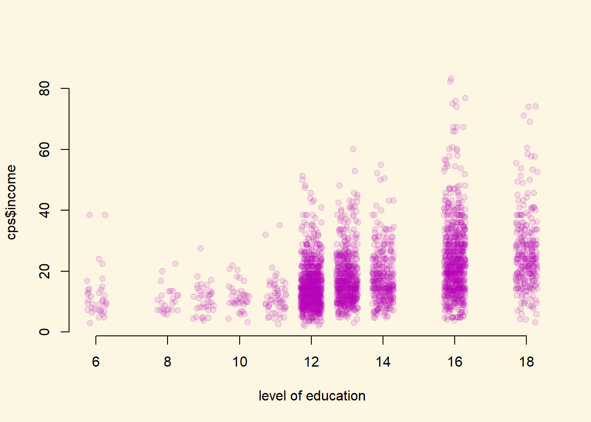

Chapter 9 Regression Assumptions
9.1 Seminar
Clear the environment and set the working directory.
rm(list = ls())
setwd("Your directory")9.1.1 Required Packages
Today, we need two new packages: lmtest and sandwich. We’ll explain the functionality offered by each package as we go along. We load the the libraries up front and you need to install lmtest and sandwich once.
install.packages("lmtest")
install.packages("sandwich")Now load the libraries.
library(lmtest)
library(sandwich)
library(texreg)9.1.2 Omitted Variable Bias
We have already dealt with OVB at length, but it is worth going over another (silly) example here for revision purposes (we talked about this example in class as well).
9.1.2.1 Ice Cream and Shark Attacks
Does ice cream consumption increase the likelihood of being attacked by a shark? Let’s explore a dataset of shark attacks, ice cream sales and monthly temperatures collected over 7 years to find out.
shark_attacks <- read.csv("shark_attacks.csv")
head(shark_attacks) Year Month SharkAttacks Temperature IceCreamSales
1 2008 1 25 11.9 76
2 2008 2 28 15.2 79
3 2008 3 32 17.2 91
4 2008 4 35 18.5 95
5 2008 5 38 19.4 103
6 2008 6 41 22.1 108Run a linear model to see the effects of ice cream consumption on shark attacks.
model1 <- lm(SharkAttacks ~ IceCreamSales, data = shark_attacks)
screenreg(model1)
========================
Model 1
------------------------
(Intercept) 4.35
(5.24)
IceCreamSales 0.34 ***
(0.06)
------------------------
R^2 0.29
Adj. R^2 0.28
Num. obs. 84
RMSE 7.17
========================
*** p < 0.001, ** p < 0.01, * p < 0.05Let’s check pairwise correlation between ice cream consumption, average monthly temperatures and shark attacks.
cor(shark_attacks[, c("SharkAttacks", "Temperature", "IceCreamSales")]) SharkAttacks Temperature IceCreamSales
SharkAttacks 1.0000000 0.7169660 0.5343576
Temperature 0.7169660 1.0000000 0.5957694
IceCreamSales 0.5343576 0.5957694 1.0000000It looks like there’s high correlation between average monthly temperatures and shark attacks, and also between ice cream consumption and monthly temperatures, so let’s add the Temperature variable to our model.
model2 <- lm(SharkAttacks ~ IceCreamSales + Temperature, data = shark_attacks)Now compare it to the first model.
screenreg(list(model1, model2))
===================================
Model 1 Model 2
-----------------------------------
(Intercept) 4.35 0.57
(5.24) (4.31)
IceCreamSales 0.34 *** 0.10
(0.06) (0.06)
Temperature 1.29 ***
(0.20)
-----------------------------------
R^2 0.29 0.53
Adj. R^2 0.28 0.52
Num. obs. 84 84
RMSE 7.17 5.84
===================================
*** p < 0.001, ** p < 0.01, * p < 0.05The second model shows that once we control for monthly temperatures, ice cream consumption has no effect on the number of shark attacks.
What was the bias in the coefficient of IceCreamSales in the model where we did not control for Temperature?
# coefficient in new model minus coefficient in old model
0.10 - 0.34[1] -0.24We overestimated the effect by 0.24, more than two thirds of the effect. We know that the real effect of selling ice cream on shark attacks is exactly 0 (unless for some reason sharks really like icecream). The two phenomena are unrelated. Our estimate, although insignificant, is still an over-estimate.
9.1.3 Detecting non-linearity
For this part of the problem set, we will be using data on the results of the German Bundestag elections in 2017. You can load this data directly from GitHub using the following command:
german_results <- read.csv("https://raw.githubusercontent.com/UCLSPP/datasets/master/data/german_election_results.csv") Note, the data contains weird looking German characters. If you want them properly displayed, load the data using its character encoding utf-8 like so: german_results <- read.csv("https://raw.githubusercontent.com/UCLSPP/datasets/master/data/german_election_results.csv", fileEncoding = "utf-8"). It’s usually not a problem because it only messes up the names of the districts.
We should again quickly see the variables that are included in the data using the head() function (or any other way you prefer):
head(german_results) district CDU SPD AfD Die.Linke
1 Flensburg â\200“ Schleswig 39.99930 28.01454 6.214686 7.129180
2 Nordfriesland â\200“ Dithmarschen Nord 45.14833 25.15210 5.881031 5.150071
3 Steinburg â\200“ Dithmarschen Süd 41.87862 26.14625 7.642704 5.481995
4 Rendsburg-Eckernförde 42.68043 28.87215 6.826306 5.172259
5 Kiel 30.50011 31.05149 6.136603 7.376207
6 Plön â\200“ Neumünster 40.69998 28.91278 7.834377 5.371334
Grune FDP unemploymentrate migrantfraction catholicfraction
1 10.512869 6.544773 7.16 10.0 5.1
2 9.453158 8.051428 7.05 8.0 5.2
3 6.716686 11.033518 6.30 9.2 4.2
4 8.954402 6.455395 5.18 8.5 4.9
5 14.403295 7.462318 9.65 18.0 7.3
6 8.993862 7.187579 6.72 10.8 5.6For this problem, we are going to be interested in modelling the share of the vote won by the SPD in each of the 299 electoral districts. This variable is named SPD in the german_results data.frame. Let’s build a linear regression model with two predictors: migrantfraction and catholicfraction, both of which are measured on a range from 0 to 100 percent.
# model on SPD
spd_linear_model <- lm(SPD ~ migrantfraction + catholicfraction , data = german_results)
# show model
screenreg(spd_linear_model)
============================
Model 1
----------------------------
(Intercept) 19.47 ***
(1.07)
migrantfraction 0.38 ***
(0.05)
catholicfraction -0.06 **
(0.02)
----------------------------
R^2 0.16
Adj. R^2 0.16
Num. obs. 299
RMSE 7.62
============================
*** p < 0.001, ** p < 0.01, * p < 0.05The model suggests that the fraction of migrants in a district is positively related to the popularity of the SPD in that district, and that there is a negative relationship between the fraction of catholics in a district and the SPD vote share. More precisely, the model tells us the for each additional percentage point of migrants, the SPD’s vote share increases by 0.38 points, holding constant the fraction of Catholics. Conversely, for each additional percentage point of Catholics, the SPD’s share of the vote increases by -0.06 points, holding constant the fraction of migrants.
As discussed in lecture, it is often useful to examine plots of the model residuals to determine whether there is evidence of a non-linear relationship between our dependent variable and our independent variables. Recall that the sample residuals are the difference between the observed values of Y and the predicted values of Y given our model: \(u_i = Y_i - \hat{Y}_i\)
We can calculate the residuals for each observation in our data that we used to estimate the model by applying the residuals() function to the model object. Let’s do this now, and assign the output to be a new variable in the german_results data frame.
# get the residuals
german_results$residuals <- spd_linear_model$residualsAssume you wanted to estimate the residuals from the fitted values. Do so on your own. Hint: You can get fitted values (model predictions for each observation in the data) as spd_linear_model$fitted.values.
german_results$residuals2 <- german_results$SPD - spd_linear_model$fitted.valuesAssess whehter both methods lead to the same result. Hint: There is rounding error, so both methods may not produce similar results numericaly. Confirm that the results are equivalent nonetheless.
# correlation coefficient
cor(german_results$residuals, german_results$residuals2)[1] 1To assess whether there is evidence for non-linearity, it can be helpful to plot the residuals against the continuous explanatory variables in our model. Remember, the assumptions behind OLS models suggest that the residuals should be randomly distributed around zero for all values of X: \(E(u_i|X_i) = 0\). So, any pattern that deviates from this randomness suggests that we may have misspecified our model.
Let’s plot the residuals from spd_linear_model against the two independent variables in our data.
par(mfrow = c(1,2))
plot(y = german_results$residuals,
x = german_results$catholicfraction,
xlab = "Catholic Fraction",
ylab = "Residuals",
frame.plot = F,
pch = 19,
cex = .7,
col = "grey")
abline(h = 0)
plot(y = german_results$residuals,
x = german_results$migrantfraction,
xlab = "Migrant Fraction",
ylab = "Residuals",
frame.plot = F,
pch = 19,
cex = .7,
col = "grey")
abline(h = 0)What can we conclude from these plots? In the left-hand plot, the residuals seem to be distributed fairly randomly around zero for all values of catholicfraction: there does not appear to be evidence of non-linearity for this variable.
In the right-hand plot, however, it seems that the residuals are mostly negative for both low and high levels of the migrantfraction variable, but evenly spread around zero for the more moderate range of this variable. This pattern of residuals does seem to deviate from the OLS assumptions to a certain degree, and therefore suggests that we might want to try to account for this possible non-linearity in our model.
One way of doing this is to include a polynomial term (we will use \(X^2\) here) in our model, as we did last week. Let’s do that now, and then screenreg() the results. Try on your own:
spd_non_linear_model <- lm(SPD ~ poly(migrantfraction,2) + catholicfraction , data = german_results)
screenreg(spd_non_linear_model)
=====================================
Model 1
-------------------------------------
(Intercept) 28.57 ***
(0.75)
poly(migrantfraction, 2)1 66.31 ***
(7.28)
poly(migrantfraction, 2)2 -58.19 ***
(7.71)
catholicfraction -0.13 ***
(0.02)
-------------------------------------
R^2 0.30
Adj. R^2 0.29
Num. obs. 299
RMSE 6.99
=====================================
*** p < 0.001, ** p < 0.01, * p < 0.05The coefficient on the squared term (poly(migrantfraction, 2)2) is significant, which indicates that there is evidence of a non-linear relationship between migrantfraction and SPD vote share in our data. This suggests that our interpretation of the residual plot above was correct, and that including the squared term is an important modification to our model. (You might also note that the Adjusted \(R^2\) has nearly doubled with the inclusion of \(X^2\), again suggesting that the non-linear adjustment is important.)
We can now repeat the same residual-plotting exersise with the residuals from our new model, to see if we are closer to meeting the OLS assumption that the error term is randomly distributed around zero for all values of X. Try on your own:
german_results$residuals_model_two <- residuals(spd_non_linear_model)
par(mfrow = c(1,2))
plot(y = german_results$residuals_model_two,
x = german_results$catholicfraction,
xlab = "Catholic Fraction",
ylab = "Residuals",
frame.plot = F,
pch = 19,
cex = .7,
col = "grey")
abline(h = 0)
plot(y = german_results$residuals_model_two,
x = german_results$migrantfraction,
xlab = "Migrant Fraction",
ylab = "Residuals",
frame.plot = F,
pch = 19,
cex = .7,
col = "grey")
abline(h = 0)The right-hand plot now looks much better: the residuals seem randomly distributed around zero for all values of the migrantfraction variable, and there is no clearly distinguishable pattern anymore.
You can also inspect how the model does overall. Repeat the previous exercise but plot the fitted values on the x-axis. What can we conclude?
par(mfrow = c(1,1))
plot(y = german_results$residuals_model_two,
x = spd_non_linear_model$fitted.values,
xlab = "Migrant Fraction",
ylab = "Residuals",
frame.plot = F,
pch = 19,
cex = .7,
col = "grey")
abline(h = 0)Overall, it looks like conditional mean independence is satisfied.
9.1.4 Heteroskedasticity
In order to understand heteroskedasticity, let’s start by loading a sample of the U.S. Current Population Survey (CPS) from 2013. The dataset contains 2989 observations of full-time workers with variables including age, gender, years of education and income reported in hourly earnings.
cps <- read.csv("cps2013.csv")head(cps) age gender education income
1 30 Male 13 12.019231
2 30 Male 12 9.857142
3 30 Male 12 8.241758
4 29 Female 12 10.096154
5 30 Male 14 24.038462
6 30 Male 16 23.668638We plot income by years of education.
plot(
y = cps$income,
x = cps$education,
xlab = "level of education",
pch = 19,
cex = 1,
bty = "n",
col = rgb(180,0,180,30, maxColorValue = 255)
)
The dots in this plot largely overlap because education is only collected for full years. It’s therefore a bit hard to see the amount of observations that have 12 years of education and income 20. You can make it easier to see the amount of points by adding sine random noise to the education variable. So for example, for everyone with twelve years of eductation, we add or subtract a small amount at random. We will still be able to tell the education categories apart. We use this jitter() function to do this. We choose a small number of noise to add such that we can see the number of observations better and education categories are still visible. You have to play around to find a good number. Try on your own.
plot(
y = cps$income,
x = jitter(cps$education, 1.5),
xlab = "level of education",
pch = 19,
cex = 1,
bty = "n",
col = rgb(180,0,180,30, maxColorValue = 255)
)
We can see that the range of values for income have a larger spread as the level of education increases. Intuitively this makes sense as people with more education tend to have more opportunities and are employed in a wider range of professions. But how does this larger spread affect the regression model?
Let’s run linear regression and take a look at the results to find out the answer.
model1 <- lm(income ~ education, data = cps)
summary(model1)
Call:
lm(formula = income ~ education, data = cps)
Residuals:
Min 1Q Median 3Q Max
-23.035 -6.086 -1.573 3.900 60.446
Coefficients:
Estimate Std. Error t value Pr(>|t|)
(Intercept) -5.37508 1.03258 -5.206 0.000000207 ***
education 1.75638 0.07397 23.745 < 0.0000000000000002 ***
---
Signif. codes: 0 '***' 0.001 '**' 0.01 '*' 0.05 '.' 0.1 ' ' 1
Residual standard error: 9.496 on 2987 degrees of freedom
Multiple R-squared: 0.1588, Adjusted R-squared: 0.1585
F-statistic: 563.8 on 1 and 2987 DF, p-value: < 0.00000000000000022The model tells us the for each additional year of education, the income increases by 1.756.
Now let’s plot the fitted model on our scatter plot of observations.
plot(
y = cps$income,
x = jitter(cps$education,1.5),
xlab = "level of education",
pch = 19,
cex = 1,
bty = "n",
col = rgb(180,0,180,30, maxColorValue = 255)
)
abline(model1, col = "darkblue", lwd = 2)Looking at the fitted model, we can see that the errors (i.e. the differences between the predicted value and the observed value) increase as the level of education increases. This is what is known as heteroskedasticity or heteroskedastic errors. In plain language it simply means that the variability of the error term is not constant across the entire range of our observations.
Another way to visualize this is by plotting residuals against the fitted values.
plot(
y = model1$residuals,
x = jitter(model1$fitted.values, 1.5),
pch = 19,
bty = "n",
xlab = "predicted income",
ylab = "residuals (difference b/w truth and prediction)",
col = rgb(180,0,180,30, maxColorValue = 255),
main = "Residuals vs. Fitted")Again, we can see that residuals are not constant and increase as the fitted values increase. In addition to visual inspection, we can also test for heteroskedasticity using the Breusch-Pagan Test from the lmtest package we loaded at the beginning.
bptest(model1)
studentized Breusch-Pagan test
data: model1
BP = 76.679, df = 1, p-value < 0.00000000000000022The null hypothesis for the Breusch-Pagan test is that the variance of the error term is constant, or in other words, the errors are homoskedestic. By looking at the p-value from Breusch-Pagan test we can determine whether we have heteroskedastic errors or not.
The p-value tells us that we can reject the null hypothesis of homoskedestic errors. Once we’ve determined that we’re dealing with heteroskedastic errors, we can correct them using the coeftest() function from the lmtest package.
Here is a list of arguments for the coeftest() function:
coeftest(model, vcov)| Argument | Description |
|---|---|
model |
This is the estimated model obtained from lm(). |
vcov |
Covariance matrix. The simplest way to obtain heteroskedasticity-consistent covariance matrix is by using the vcovHC() function from the sandwich package. The result from vcovHC() can be directly passed to coeftest() as the second argument. |
screenreg(coeftest(model1, vcov = vcovHC(model1)))
======================
Model 1
----------------------
(Intercept) -5.38 ***
(1.05)
education 1.76 ***
(0.08)
======================
*** p < 0.001, ** p < 0.01, * p < 0.05After correcting for heteroskedasticity we can see that the standard error for the independent variable education have increased from 0.074 to 0.08. Even though this increase might seem very small, remember that it is relative to the scale of the independent variable. Since the standard error is the measure of precision for the esitmated coefficients, an increase in standard error means that our original estiamte wasn’t as good as we thought it was before we corrected for heteroskedasticity.
Now that we can get heteroskedastic corrected standard errors, how would you present them in a publication (or in your dissertation or the final exam)? Fortunately, all textreg functions such as screenreg() or htmlreg() allow us to easily override the standard errors and p-value in the resulting output.
We first need to save the result from coeftest() to an object and then override the output from screenreg() by extracting the two columns of interest.
The corrected standard errors are in column 2 of the object returned by coeftest() and the associated p-values are in column 4:
corrected_errors <- coeftest(model1, vcov = vcovHC(model1))
screenreg(model1,
override.se = corrected_errors[, 2],
override.pval = corrected_errors[, 4])
========================
Model 1
------------------------
(Intercept) -5.38 ***
(1.05)
education 1.76 ***
(0.08)
------------------------
R^2 0.16
Adj. R^2 0.16
Num. obs. 2989
RMSE 9.50
========================
*** p < 0.001, ** p < 0.01, * p < 0.059.1.5 Exercises
Does Indiscriminate Violence Incite Insurgent Attacks? Download and then load chechen.csv.
Does a state’s use of indiscriminate violence incite insurgent attacks? To date, most existing theories and empirical studies have concluded that such violence is highly counterproductive because it creates new grievances while forcing victims to seek security, if not safety, in rebel arms. This proposition is tested using Russian artillery fire in Chechnya (2000 to 2005) to estimate indiscriminate violence’s effect on subsequent patterns of insurgent attacks […].
Codebook:
| Variable | Description |
|---|---|
| vilno | unique village number |
| disno | unique distric number |
| treat | Russian artillery shelling of cechan village |
| poverty | estimated need (3 is highest) |
| pop2000 | population in 2000 |
| lpop2000 | logged population in 2000 |
| pret | pre-treatment insurgent attacks |
| post | post-treatment insurgent attacks |
| diff | post minus pret |
| groznyy | 1 if in groznyy |
| elevation | in meters |
| lelev | logged elevation |
| tariq | Tariqa (1=Naq.) |
| nn | distance to nearest neighbour (km) |
| lnn | logged distance to nearest neighbour |
| reb | rebel (1 = Basayev) |
| garrison | (1 = Russian base present) |
| vildays | days to first insurgent attack after treatment |
| deaths | estimated number of individuals killed during Russian artillery shelling |
| deathsd | 1 indicates that individuals were killed during shelling |
| wounded | estimated number of individuals wounded during Russian artillery shelling |
| woundedd | 1 indicates that individuals were wounded during Russian artillery shelling |
| fail | 1 if insurgent attack is observed in 90 days after artillery shelling |
| swept | 1 indicates village was swept in 90 days prior to artillery shelling |
| prop | estimated number of structures destroyed during shelling |
| propd | 1 indicates that property was destroyed during shelling |
| lprop | logged number of estimated structures destroyed or damaged during shelling |
| history | number of times village had been shelled in the past |
| historyd | 1 indicates that village had been shelled in the past |
| lhistory | logged number of times village had been shelled |
| change | 1 if DD is increase: 0 if no change, -1 if DD decreases |
| decrease | 1 if decrease recorded, 0 if not |
| increase | 1 if increase in DD recorded, 0 if not |
| abandon | number of neighbours within 5km^2 radius |
The dataset comes from an article in the Journal of Conflict Resolution. Use the codebook above for the tasks and if anything is unclear, refer to the article that we have linked to above.
- Load
chechen.csv. - Run a bivariate regression model with
diffas the dependent variable andtreatas the predictor. - Control for additional variables. Discuss your choice of variables and refer to omitted variable bias.
- Discuss the improvement in model fit and use the appropriate test statistic.
- Check for non-linearity and if there is solve the problem.
- Check for heteroskedasticity and if there is solve the problem.
- Thoroughly compare the models, and interpret the outcome in substantial as well statistical terms - do not forget to talk about model fit. What are the implications of this?
Ordinary Economic Voting Behavior in the Extraordinary Election of Adolf Hitler Download and then load who_voted_nazi_in_1932.csv.
The goal of analysis is to investigate which types of voters (based on their occupation category) cast ballots for the Nazis. One hypothesis says that the Nazis received much support from blue-collar workers. Since the data do not directly tell us how many blue-collar workers voted for the Nazis, we must infer this information using a statistical analysis […].
The data contains aggregate voting behaviour from 681 voting districts.
Codebook:
| Variable | Description |
|---|---|
| sharenazis | Percent of the vote Nazis received in the district |
| nazivote | Number of Nazi votes |
| nvoter | Total number of eligible voters |
| shareblue | Percent of blue-collar potential voters |
| sharewhite | Percent of white-collar potential voters |
| shareself | Percent of self-employed potential voters |
| sharedomestic | Percent of domestically employed potential voters |
| shareunemployed | Percent of unemployed potential voters |
- Load
who_voted_nazi_in_1932.csv. - Run a bivariate model to test whether blue-collar voters voted for the Nazis.
- Control for additional variables. Discuss your choice of variables and refer to omitted variable bias.
- Can you fit a model using
shareblue,sharewhite,shareself,sharedomestic, andshareunemployedas predictors? Why or why not? - Check for heteroskedasticity and if there is solve the problem.
- Interpret your models.
Load the Massachusetts Test Scores dataset MA_Schools.csv from your PUBLG100 folder.
The dataset contains 16 variables, but we’re only interested in the following:
| Variable | Description |
|---|---|
| score8 | 8th grade scores |
| stratio | Student-teacher ratio |
| english | % English learners |
| lunch | % Receiving lunch subsidy |
| income | Average district income |
- Fit a model to explain the relationship between percentage of English learners and average 8th grade scores.
- Plot the model and the regression line.
- Check for correlation between the variables listed above to see if there are other variables that should be included in the model.
- HINT: There are some missing values in the dataset. Remove the NA’s from the dataset like we have seen previously.
- Add two variables from the list above that are highly correlated with both the independent and the dependent variable and run a linear regression again.
- Compare the two models. Did the first model suffer from omitted variable bias?
- Plot the residuals against the fitted values from the second model to visually check for heteroskedasticity.
- Run the Breusch-Pagan Test to see whether the model suffers from heteroskedastic errors.
- Correct for heteroskedasticity (if needed) and present the results with corrected standard errors and p-values.
- Save everything and source your script. If you get error messages, clean your script.